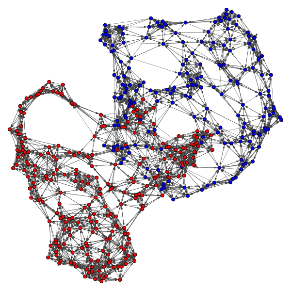

Research
I am working with Professor Guido Montúfar on statistical machine learning, with a focus on problems in foundations of deep learning.
My research interests are broadly in:
Deep learning theory: Generalization, Non-convex optimization
Algebraic statistics
Manifold learning
Projects
Understanding expressivity of neural networks through tropical geometry
 |
Tropical geometry is a variant of algebraic geometry where people study polynomials and their geometric properties with addition replaced by minimization and multiplication replaced by ordinary addition. Under this formulation, the polynomial graphs would resemble piecewise linear meshes where numbers belong to the tropical semiring instead of a field. The maximum operation and the piecewise linear property of the mesh leads us to think of neural networks with a particular family of activations and the linear regions cut out by the activation functions. In 2018, Zhang et al. established the first connection between tropical geometry and feedforward neural networks with ReLU activation by showing that the family of such neural networks is equivalent to the family of tropical rational maps. We generalized the results from Zhang's paper and applied other techniques such as patchworking to study the expressive power of neural networks with piecewise linear activation functions. |
Geometric Algorithms for predicting resilience and recovering damage in neural networks
Biological neural networks have evolved to maintain performance despite significant circuit damage. To survive damage, biological network architectures have both intrinsic resilience to component loss and also activate recovery programs that adjust network weights through plasticity to stabilize performance. Despite the importance of resilience in technology applications, the resilience of artificial neural networks is poorly understood, and autonomous recovery algorithms have yet to be developed. In this paper, we establish a mathematical framework to analyze the resilience of artificial neural networks through the lens of differential geometry. Our geometric language provides natural algorithms that identify local vulnerabilities in trained networks as well as recovery algorithms that dynamically adjust networks to compensate for damage. We reveal striking vulnerabilities in commonly used image analysis networks, like MLP's and CNN's trained on MNIST and CIFAR10 respectively. We also uncover high-performance recovery paths that enable the same networks to dynamically re-adjust their parameters to compensate for damage. Broadly, our work provides procedures that endow artificial systems with resilience and rapid-recovery routines to enhance their integration with IoT devices as well as enable their deployment for critical applications. Joint work with Guruprasad Raghavan and Matt Thomson. arXiv |
Political Clusters: Legislator Communities from Voting Records
|  | We utilize voting records in conjunction with clustering and community
detection algorithms to classify legislators into communities by political stance.
The underlying assumption is that legislators with more similar voting records have
more similar political stances. We consider legislatures from multiple countries: the
United States House of Representatives, German Bundestag, Legislative Council of Hong
Kong, and South Korean National Assembly. For each legislature, we collect roll call voting
data and apply five different similarity functions to construct similarity matrices of
the legislators. We then apply spectral clustering, Louvain
with and without k-nearest neighbors preprocessing, and MBO
modularity maximization methods to the similarity matrices. Joint work with Kyung Ha, Grace Li, Blaine Talbut and Thomas Tu from Department of Mathematics, UCLA. |
Journal Publications
(Under Review) Guo, D., Jin, X., Shao, D., Li, J., Shen, Y., Tan, H. "Image-Based Regulation of Mobile Robots without Pose Measurement", In L-CSS + ACC 2022.
(Under Review) Huang, Z., Shen, Y., Li, J., Fey, M., Brecher, C. "A Survey on AI-Driven Digital Twins in Intelligent Infrastructure: Energy, Smart City, and Healthcare", In Sensors, 2021.
Huang, Z., Shen, Y., Li, J., Fey, M., Brecher, C. "A Survey on AI-Driven Digital Twins in Industry 4.0: Smart Manufacturing and Advanced Robotics", In Sensors, 2021.
Li, J. and Wang, Y. "An Interview with Owen McCall from TREECYCLE", In XRDS 27, 4 (Summer 2021), pp. 42-45, 2021.
Li, J. and Ahuja, K. "Making with a Sustainable Purpose: an Interview with Matthew L. Mauriello", In XRDS 27, 4 (Summer 2021), pp. 38-41, 2021.
Preprints
Raghavan, G., Li, J., and Thomson, M. “Geometric Algorithms for Predicting Resilience and Recovering Damage in Neural Networks”, arXiv, 2020